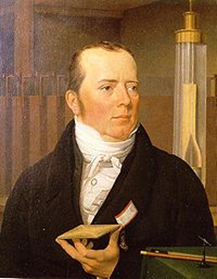
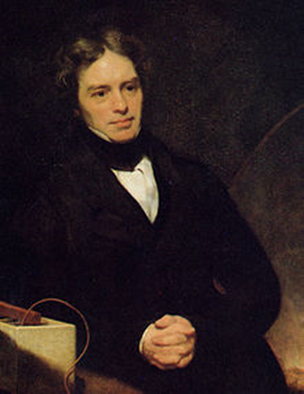
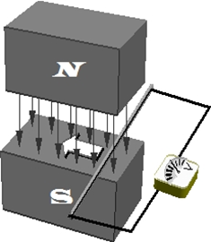
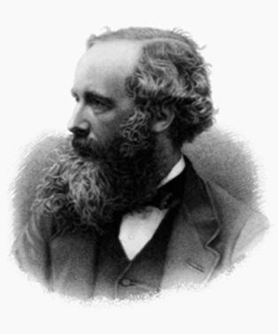
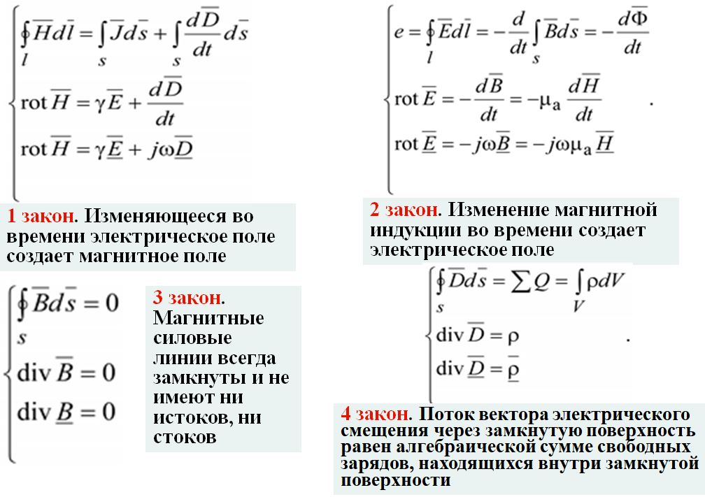
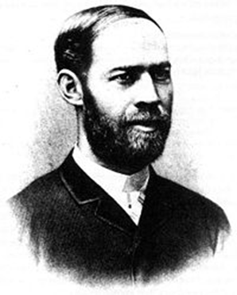

Влияние научных трудов Х. Эрстеда, М. Фарадея, Д. Максвелла и Г. Герца на возникновение радиотехники.

Ханс
Христиан Эрстед (1777-1851) — датский ученый, физик - родился в семье
аптекаря. Исследователь явлений электромагнетизма. Зимой 1819-1820 Эрстед на
лекции в университете демонстрировал нагрев проволоки электричеством от вольтова
столба, для чего составил электрическую цепь. На демонстрационном столе
находился морской компас, поверх стеклянной крышки которого проходил один из
проводов. Вдруг кто-то из студентов случайно заметил, что когда Эрстед замкнул
цепь, магнитная стрелка компаса отклонилась в сторону.
В результате
экспериментов обнаружил и исследовал:
-
Величина отклонения стрелки зависит от мощности воздействия;
-
Проводники (золото, серебро, платина и т.п.) при пропускании тока начинают обладать магнитными свойствами;
-
Изолировать диэлектриками (стекло, дерево и др.) стрелку от воздействия не удается.
Открыл термоэлектрический эффект и создал первый термоэлемент.
Изучал сжимаемость и упругость газов, изобрёл пьезометр, занимался молекулярной
физикой.

Майкл Фарадей ( 1791-1867) — в семье кузнеца. Английский физик, химик и физико-химик, основоположник учения об электромагнитном поле, экспериментально открыл и дал математическое описание явления электромагнитной индукции. После открытия в 1820 Х. Эрстедом магнитного действия электрического тока Фарадея увлекла проблема связи между электричеством и магнетизмом. В 1822 г. в его лабораторном дневнике появилась запись: «Превратить магнетизм в электричество». В 1831 г. Фарадей экспериментально открыл явление электромагнитной индукции — возникновение электрического тока в проводнике, движущемся в магнитном поле. Фарадей также дал математическое описание этого явления.
В 1820 Фарадей провёл несколько опытов по выплавке сталей, содержащих никель- открытие нержавеющей стали. В период до 1821 Фарадей опубликовал около 40 научных работ, главным образом по химии. В 1824 ему первому удалось получить хлор в жидком состоянии, а в 1825 г он впервые синтезирует гексахлоран.
Переменный поток магнитного поля создаёт электрическое поле (закон Фарадея)


Джеймс Клерк Максвелл (1831-1879) — родился в семье шотландского
дворянина из знатного рода Клерков. Максвелл приступил к исследованию
электричества и магнетизма примерно 20 лет спустя после Фарадея. В 1860—1865
Максвелл создал теорию электромагнитного поля, которую сформулировал в виде
системы уравнений (уравнений Максвелла), описывающих основные закономерности
электромагнитных явлений: 1-е уравнение выражало электромагнитную индукцию
Фарадея; 2-е — магнитоэлектрическую индукцию, открытую Максвеллом и
основанную на представлениях о токах смещения; 3-е — закон сохранения
количества электричества; 4-е — вихревой характер магнитного поля.
Вывод
исследований: любые изменения электрического и магнитного полей должны вызывать
изменения в силовых линиях, пронизывающих окружающее пространство, то есть
должны существовать импульсы (или волны), распространяющиеся в среде. Скорость
распространения этих волн зависит от диэлектрической и магнитной проницаемости
среды и равна отношению электромагнитной единицы к электростатической. Это
отношение составляет 3,4*1010 см/с, что близко к скорости света.

Уравнения Максвелла
позволяют строгими математическими методами решить множество полезных
практических задач: рассчитать поле излучения различных антенн; рассчитать
конструкцию волноводов и объемных резонаторов и т.п.

Генрих Рудольф
Герц — родился 22 февраля 1857, в Гамбурге, Германия, в
процветающей и культурной семье. Основное достижение — экспериментальное
подтверждение электромагнитной теории света Максвелла. Герц доказал
существование электромагнитных волн (ЭМВ). Он подробно исследовал отражение,
интерференцию, дифракцию и поляризацию электромагнитных волн, доказал что
скорость их распространения совпадает со скоростью распространения света, и что
свет представляет собой не что иное как разновидность электромагнитных волн.
В 1886—87 гг. Герц впервые наблюдал и дал описание внешнего
фотоэффекта.
Умер в 36 лет от заражения крови.
Герц разрабатывал
теорию резонаторного контура, изучал свойства катодных лучей, исследовал влияние
ультрафиолетовых лучей на электрический разряд. В ряде работ по механике дал
теорию удара упругих шаров, рассчитал время соударения и т.д. В книге «Принципы
механики» (1894) дал вывод общих теорем механики и её математического аппарата,
исходя из единого принципа (принцип Герца). Именем Герца с 1933 г. называется
единица измерения частоты Герц, которая входит в международную метрическую
систему единиц
СИ.